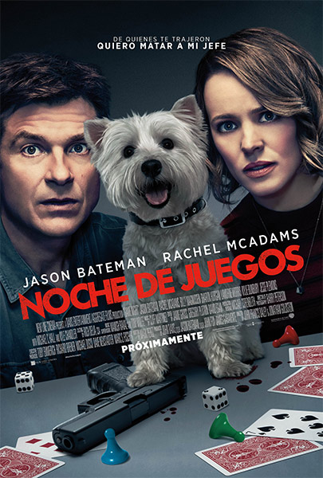
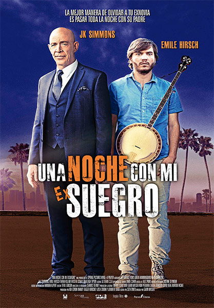
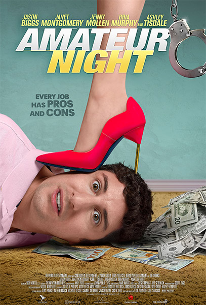
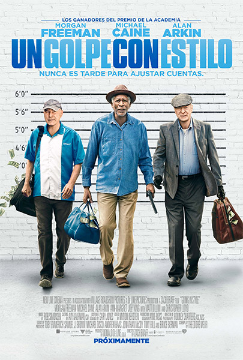

 Noche de juegos Un grupo de amigos que se reúnen regularmente para noches de juegos se encuentran involucrados en un misterio de la vida real. Ver
Las travesuras de Peter Rabbit Peter Rabbit y su familia disfrutan de atormentar al señor McGregor por su jardín de hortalizas. Hasta que un día nadie puede impedirles de pasearse por su casa y sus tierras hasta que llega uno de los parientes de McGregor, el cual recibe más de lo que esperaba. Ver
 Una noche con mi exsuegro Un padre trabajador visita a su hija durante una escala en su vuelo en Los Angeles pero descubre que desapareció, entonces se ve forzado a juntarse con el extraño exnovio para buscarla a lo largo de una transformadora noche. Ver
 Un chofer en apuros Guy Carter es un brillante arquitecto con una bella esposa y un bebé en camino, pero está desempleado así que acepta un trabajo de chofer pensando que será repartidor de pizza, pero pronto se da cuenta que se trata de llevar y recoger prostitutas. Ver
Duro de cuidar El mejor guardaespaldas del mundo recibe un nuevo cliente, un asesino a sueldo que debe testificar ante la Corte Internacional de Justicia. Deben dejar sus diferencias de lado y trabajar juntos para poder llegar al juicio. Ver
 Un golpe con estilo Desesperados por pagar las cuentas y estar ahí para sus seres queridos, tres amigos de toda la vida arriesgan todo e idean un plan audaz para robar el banco que tomó el dinero de su jubilación. Ver